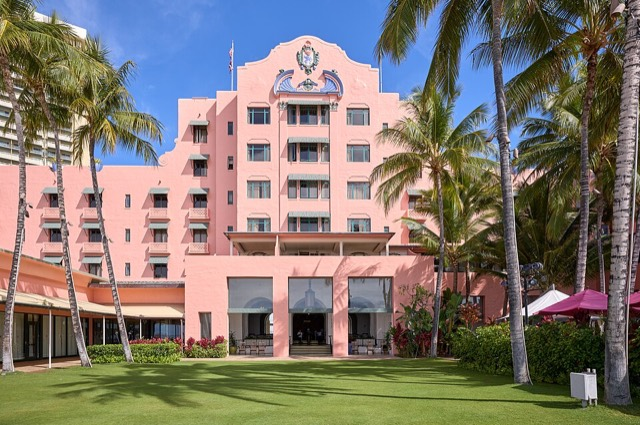
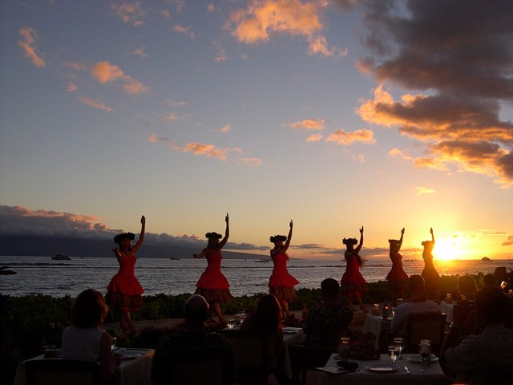
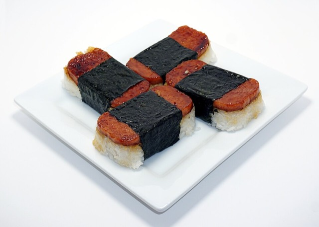
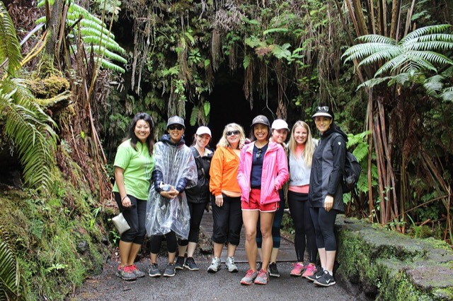
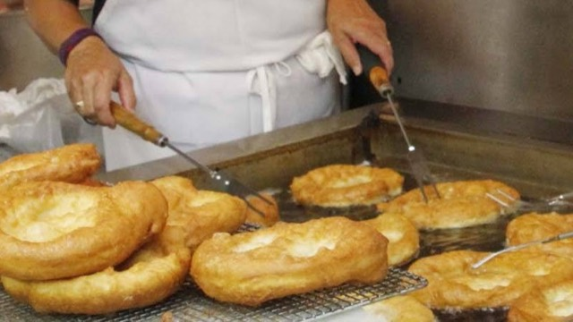

HAWAII · FAMILY TRIP · 2026
山海之间，慢慢度假。 夏威夷家庭旅行 · 2026年12月9日–20日 · 4人 · 12天11晚
威基基 5晚 火山村 2晚 大岛西海岸 4晚 日期已确定
本次资料核查：2026/10/21（芝加哥时间） · 行程时间均为夏威夷当地时间 HST 下载含当前分工的网页 导出进度备份 导入进度 打印／另存PDF
每日行程 活动预订 吃饭预订 住宿与比价 机票与交通 分工与进度 行李清单 行程总览 水上活动 景点／活动 海滩／自由 吃饭 表演晚餐 交通 入住／退房 航班 左右滑动看全部12天；下面是每天的详细安排。
瓦胡岛
Day 112/9 周三
住：Ala Moana Blvd
瓦胡岛
Day 212/10 周四
住：Ala Moana Blvd
瓦胡岛
Day 312/11 周五
住：Ala Moana Blvd
瓦胡岛
Day 412/12 周六
住：Ala Moana Blvd
瓦胡岛
Day 512/13 周日
住：Ala Moana Blvd
大岛
Day 612/14 周一
住：火山村 7th St
大岛
Day 712/15 周二
住：火山村 7th St
大岛
Day 812/16 周三
住：Waikoloa Village
大岛
Day 912/17 周四
住：Waikoloa Village
大岛
Day 1012/18 周五
住：Waikoloa Village
大岛
Day 1112/19 周六
住：Waikoloa Village
大岛
Day 1212/20 周日
住：返程
7:00
8:00
9:00
10:00
11:00
12:00
13:00
14:00
15:00
16:00
17:00
18:00
19:00
20:00
21:00
22:00
取车 → 住处
开车→钻石头山
早餐
午餐
回家休息
→恐龙湾
走Pali Hwy（避开马拉松）
→Kewalo Basin
✈ 09:45 HNL→KOA
回住处休息
退房 →Hilo
Saddle Road上山
在家休息
→Waimea
→牧场
→Keauhou
回住处
→科纳
→Hāpuna
睡懒觉 · 休息
→科纳
回住处
退房
→科纳南边
每天详细安排
吃什么 每天的午餐／晚餐候选、poke和海鲜推荐、以及一次Luau表演晚餐，都在「吃饭预订」页。
当天检查 火山夜光、海况和景区开放均不保证；12/13尽量步行，不把封路时间写死。
图片来源（Wikimedia Commons，均为自由许可） Anaehoomalu Bay Palms.jpg — Polihale，CC BY-SA 3.0Akaka falls dllu.jpg — Dllu，CC BY-SA 4.0Quail 07 bg 041506.jpg — Jon SullivanThe original uploader was Y6y6y6 at English Wikipedia.，Public domainDiamond Head Hawaii From Round Top Rd.JPG — mar1865，CC BY-SA 3.0Episode 4 of Kilauea%27s December 2024 eruption 2025-01-16.jpg — USGS/K. Lynn，Public domainHalona Blowhole a0002860.jpg — This file was created by Thomas Tunsch. It is not in the public domain and use o，CC BY-SA 4.0Hanauma Bay.JPG — ErgoSum88，Public domainSkimboarder at hapuna beach.jpg — Polihale，CC BY-SA 3.0Hawaiian-dishes-01.jpg — takaokun，CC BY 2.0Hilo farm market.jpg — Staecker，Public domainKailua Beach Park - Oahu - Hawaii.jpg — Tony Webster，CC BY 2.0Roasted puaa.jpg — Adam，CC BY-SA 2.0KilaueaIki.jpg — VitaleBaby (talk · contribs)，Public domainKualoa Ranch.jpg — 见原页面，CC BY-SA 2.5Lanikai Beach, Hawaii.JPG — Cristo Vlahos，CC BY-SA 3.0Luaulau.png — Chedlund808，CC BY-SA 4.0Thurston Lava Tube (N%C4%81huku) (34451623741).jpg — Hawai‘i Volcanoes NPS，Public domainLeonard%27s Bakery (4290322777).jpg — Arnold Gatilao from Oakland, CA, USA，CC BY 2.0Loco moco (32605169782).jpg — California Cow from Seattle, USA，CC BY 2.0Luau dancers at sunset, Maui - DSCN0121 (4880363).jpg — Nicole Bratt from Seattle, WA, USA，CC BY-SA 2.0Hugeassmalassada.jpg — Chedlund808，CC BY-SA 4.0Dharavandhoo Thila - Manata Black Pearl.JPG — Shiyam ElkCloner，CC BY-SA 3.0Mauna Kea Summit 2021-06-16 33 (cropped).jpg — Leijurv，CC BY-SA 4.0Phat Thai kung Chang Khien street stall.jpg — Takeaway，CC BY-SA 3.0Rainbow Drive-In mix plate lunch (2194653288).jpg — Arnold Gatilao from Oakland, CA, USA，CC BY 2.0Shoyu and onion poke.jpg — Aquateamhungerforce，CC BY-SA 4.0Polol%C5%AB Valley, Hawaii.JPG — Holly Cheng，CC BY-SA 4.0Punaluu Black Sand Beach, Hawaii, USA8.jpg — Diego Delso，CC BY-SA 3.0Rainbow Falls Exhibiting Prism Effect.jpg — Gr0ph0n，CC BY-SA 4.0The Royal Hawaiian (2024)-L1004805.jpg — Frank Schulenburg，CC BY-SA 4.0Underwater photograph of a recreational scuba diver in Playa del Carmen 2006.jpg — Soljaguar，CC BY-SA 3.0Hilo Ice Shave.JPG — AlaskaDave，CC BY-SA 3.0Homemade Spam Musubi.jpg — Chris Hackmann，CC BY-SA 4.0Waikiki Beach Honolulu. (13980768719).jpg — Bernard Spragg. NZ from Christchurch, New Zealand，CC0City of Waikiki view.jpg — Pickle the cool，CC BY-SA 4.0Waimea pastures.JPG — Bonus Onus，CC BY-SA 3.0Waipio Lookout View.jpg — Paul Hirst (Phirst)，CC BY-SA 2.5Horse ride around the Kualoa Ranch trails.png — The Eloquent Peasant，CC BY-SA 4.0Ho%27omaluhia Botanical Garden - lake view.JPG — Daderot.，CC BY-SA 3.0Kealakekua Bay in the morning.jpg — Nnachappa64，CC BY-SA 4.0Puʻuhonua o Hōnaunau.jpg — Carol M. Highsmith，Public domain餐厅图片为该店招牌菜／当地代表菜的示意图，不一定是这家店的实物。 活动与预订入口 默认4人活动、2人无证体验潜。冲浪／牧场／蝠鲼为指定场次四人含税总价；修改人数后须重新报价，不线性冒充实时报价。公园按现行费率，体验潜与观星仅现行基础价。小费另计。
筛选 全部活动 瓦胡岛 大岛 已计入预算
图片来源（Wikimedia Commons，均为自由许可） Anaehoomalu Bay Palms.jpg — Polihale，CC BY-SA 3.0Akaka falls dllu.jpg — Dllu，CC BY-SA 4.0Quail 07 bg 041506.jpg — Jon SullivanThe original uploader was Y6y6y6 at English Wikipedia.，Public domainDiamond Head Hawaii From Round Top Rd.JPG — mar1865，CC BY-SA 3.0Episode 4 of Kilauea%27s December 2024 eruption 2025-01-16.jpg — USGS/K. Lynn，Public domainHalona Blowhole a0002860.jpg — This file was created by Thomas Tunsch. It is not in the public domain and use o，CC BY-SA 4.0Hanauma Bay.JPG — ErgoSum88，Public domainSkimboarder at hapuna beach.jpg — Polihale，CC BY-SA 3.0Hawaiian-dishes-01.jpg — takaokun，CC BY 2.0Hilo farm market.jpg — Staecker，Public domainKailua Beach Park - Oahu - Hawaii.jpg — Tony Webster，CC BY 2.0Roasted puaa.jpg — Adam，CC BY-SA 2.0KilaueaIki.jpg — VitaleBaby (talk · contribs)，Public domainKualoa Ranch.jpg — 见原页面，CC BY-SA 2.5Lanikai Beach, Hawaii.JPG — Cristo Vlahos，CC BY-SA 3.0Luaulau.png — Chedlund808，CC BY-SA 4.0Thurston Lava Tube (N%C4%81huku) (34451623741).jpg — Hawai‘i Volcanoes NPS，Public domainLeonard%27s Bakery (4290322777).jpg — Arnold Gatilao from Oakland, CA, USA，CC BY 2.0Loco moco (32605169782).jpg — California Cow from Seattle, USA，CC BY 2.0Luau dancers at sunset, Maui - DSCN0121 (4880363).jpg — Nicole Bratt from Seattle, WA, USA，CC BY-SA 2.0Hugeassmalassada.jpg — Chedlund808，CC BY-SA 4.0Dharavandhoo Thila - Manata Black Pearl.JPG — Shiyam ElkCloner，CC BY-SA 3.0Mauna Kea Summit 2021-06-16 33 (cropped).jpg — Leijurv，CC BY-SA 4.0Phat Thai kung Chang Khien street stall.jpg — Takeaway，CC BY-SA 3.0Rainbow Drive-In mix plate lunch (2194653288).jpg — Arnold Gatilao from Oakland, CA, USA，CC BY 2.0Shoyu and onion poke.jpg — Aquateamhungerforce，CC BY-SA 4.0Polol%C5%AB Valley, Hawaii.JPG — Holly Cheng，CC BY-SA 4.0Punaluu Black Sand Beach, Hawaii, USA8.jpg — Diego Delso，CC BY-SA 3.0Rainbow Falls Exhibiting Prism Effect.jpg — Gr0ph0n，CC BY-SA 4.0The Royal Hawaiian (2024)-L1004805.jpg — Frank Schulenburg，CC BY-SA 4.0Underwater photograph of a recreational scuba diver in Playa del Carmen 2006.jpg — Soljaguar，CC BY-SA 3.0Hilo Ice Shave.JPG — AlaskaDave，CC BY-SA 3.0Homemade Spam Musubi.jpg — Chris Hackmann，CC BY-SA 4.0Waikiki Beach Honolulu. (13980768719).jpg — Bernard Spragg. NZ from Christchurch, New Zealand，CC0City of Waikiki view.jpg — Pickle the cool，CC BY-SA 4.0Waimea pastures.JPG — Bonus Onus，CC BY-SA 3.0Waipio Lookout View.jpg — Paul Hirst (Phirst)，CC BY-SA 2.5Horse ride around the Kualoa Ranch trails.png — The Eloquent Peasant，CC BY-SA 4.0Ho%27omaluhia Botanical Garden - lake view.JPG — Daderot.，CC BY-SA 3.0Kealakekua Bay in the morning.jpg — Nnachappa64，CC BY-SA 4.0Puʻuhonua o Hōnaunau.jpg — Carol M. Highsmith，Public domain餐厅图片为该店招牌菜／当地代表菜的示意图，不一定是这家店的实物。 吃什么、在哪吃 按每天的路线排好了午餐／晚餐候选，重点是poke、海鲜和夏威夷地方菜 （loco moco、kalua pig、laulau、malasada、刨冰）。点店名可在地图打开。营业时间来自网上资料，变动较多，出发前一周再确认。
Luau表演晚餐（只选一顿） 
★ 推荐：12/10 周四 · ʻAhaʻaina（Royal Hawaiian，威基基） 海边草坪上的Luau：17:00签到、献花环，晚餐后约19:00开始表演。官网列成人$240–265（13岁以上）。只在周一、周四举行，从住处步行约19分钟（或Uber约5分钟），不用开车、不用担心喝酒。
官网／订票 ↗

省钱备选：12/18 周五 · Voyagers of the Pacific（Royal Kona Resort，科纳） 每周一、二、三、五举行，约16:45签到。官网2026年成人网上价$168.65，4人比ʻAhaʻaina约省$300。从Hāpuna开约50分钟到科纳，当天下午海滩时间要缩短。
官网／订票 ↗ 其他：Waikiki Starlight（Hilton Hawaiian Village，周日／二／四／五，价格未查到）；Island Breeze（科纳，周二／四／日，特价约$178）——12/20周日也有，但和当晚还车、红眼航班时间太紧，不推荐。价格以官网为准。
瓦胡岛（12/9–12/13）
12/9 周三 · 威基基（抵达）
晚餐
第一天累，外带poke回酒店吃最轻松。 12/10 周四 · 钻石头山 · Kapahulu
午餐（下山后，约10分钟）
晚餐
想吃最地道的夏威夷菜：Helena’s Hawaiian Food（Kalihi，只做周二到周五午餐、只收现金、会卖完），Uber约20分钟。 12/11 周五 · 东岸 · 古拉瓦
午餐（Kailua→古拉瓦路上）
晚餐（回威基基后）
12/12 周六 · 恐龙湾 · 东南海岸
午餐

在Hawaii Kai一带超市买poke、spam musubi、饮料，带到Waimānalo海滩野餐。晚餐
12/13 周日 · 威基基（马拉松日）
午餐／下午
瓦胡岛告别晚餐
Maguro Brothers周日不营业。 大岛（12/14–12/20）
12/14 周一 · 科纳 → 火山村
午餐（科纳，取车后）
晚餐（火山村）
12/15 周二 · 火山国家公园
午餐

早上在火山村小店／超市买三明治、饭团带进公园，Nāhuku熔岩管附近野餐。晚餐
12/16 周三 · Hilo → Honokaʻa → Waikoloa
早午餐（Hilo）
午餐／下午点心（Honokaʻa）

小吃 Tex Drive In ↗ 晚餐（12/16从冒纳凯亚回来较晚，在家简单吃；这两家可放到别的晚上）
12/17 周四 · 科纳（潜水＋蝠鲼）
午餐（不潜水的两人／潜完后）
蝠鲼夜游前的早晚餐（约16:00）
夜游后很晚，晚餐尽量在出发前吃完。 12/18 周五 · Pololū · Hāpuna
午餐
晚餐
12/19 周六 · 冒纳凯亚（可选）／自由日
晚餐
12/20 周日 · 科纳（返程日）
午餐
告别晚餐（约17:30，离KOA约20分钟）
海鲜 Huggo's ↗ 吃完约19:45到KOA还车，22:52起飞。 来源：Ono Seafood · Maguro Brothers · 檀香山poke · 大岛poke · 火山村餐厅 · Tex Drive In · Hale ʻAina奖 · ʻAhaʻaina · Voyagers · Island Breeze · 瓦胡岛Luau比较
图片来源（Wikimedia Commons，均为自由许可） Anaehoomalu Bay Palms.jpg — Polihale，CC BY-SA 3.0Akaka falls dllu.jpg — Dllu，CC BY-SA 4.0Quail 07 bg 041506.jpg — Jon SullivanThe original uploader was Y6y6y6 at English Wikipedia.，Public domainDiamond Head Hawaii From Round Top Rd.JPG — mar1865，CC BY-SA 3.0Episode 4 of Kilauea%27s December 2024 eruption 2025-01-16.jpg — USGS/K. Lynn，Public domainHalona Blowhole a0002860.jpg — This file was created by Thomas Tunsch. It is not in the public domain and use o，CC BY-SA 4.0Hanauma Bay.JPG — ErgoSum88，Public domainSkimboarder at hapuna beach.jpg — Polihale，CC BY-SA 3.0Hawaiian-dishes-01.jpg — takaokun，CC BY 2.0Hilo farm market.jpg — Staecker，Public domainKailua Beach Park - Oahu - Hawaii.jpg — Tony Webster，CC BY 2.0Roasted puaa.jpg — Adam，CC BY-SA 2.0KilaueaIki.jpg — VitaleBaby (talk · contribs)，Public domainKualoa Ranch.jpg — 见原页面，CC BY-SA 2.5Lanikai Beach, Hawaii.JPG — Cristo Vlahos，CC BY-SA 3.0Luaulau.png — Chedlund808，CC BY-SA 4.0Thurston Lava Tube (N%C4%81huku) (34451623741).jpg — Hawai‘i Volcanoes NPS，Public domainLeonard%27s Bakery (4290322777).jpg — Arnold Gatilao from Oakland, CA, USA，CC BY 2.0Loco moco (32605169782).jpg — California Cow from Seattle, USA，CC BY 2.0Luau dancers at sunset, Maui - DSCN0121 (4880363).jpg — Nicole Bratt from Seattle, WA, USA，CC BY-SA 2.0Hugeassmalassada.jpg — Chedlund808，CC BY-SA 4.0Dharavandhoo Thila - Manata Black Pearl.JPG — Shiyam ElkCloner，CC BY-SA 3.0Mauna Kea Summit 2021-06-16 33 (cropped).jpg — Leijurv，CC BY-SA 4.0Phat Thai kung Chang Khien street stall.jpg — Takeaway，CC BY-SA 3.0Rainbow Drive-In mix plate lunch (2194653288).jpg — Arnold Gatilao from Oakland, CA, USA，CC BY 2.0Shoyu and onion poke.jpg — Aquateamhungerforce，CC BY-SA 4.0Polol%C5%AB Valley, Hawaii.JPG — Holly Cheng，CC BY-SA 4.0Punaluu Black Sand Beach, Hawaii, USA8.jpg — Diego Delso，CC BY-SA 3.0Rainbow Falls Exhibiting Prism Effect.jpg — Gr0ph0n，CC BY-SA 4.0The Royal Hawaiian (2024)-L1004805.jpg — Frank Schulenburg，CC BY-SA 4.0Underwater photograph of a recreational scuba diver in Playa del Carmen 2006.jpg — Soljaguar，CC BY-SA 3.0Hilo Ice Shave.JPG — AlaskaDave，CC BY-SA 3.0Homemade Spam Musubi.jpg — Chris Hackmann，CC BY-SA 4.0Waikiki Beach Honolulu. (13980768719).jpg — Bernard Spragg. NZ from Christchurch, New Zealand，CC0City of Waikiki view.jpg — Pickle the cool，CC BY-SA 4.0Waimea pastures.JPG — Bonus Onus，CC BY-SA 3.0Waipio Lookout View.jpg — Paul Hirst (Phirst)，CC BY-SA 2.5Horse ride around the Kualoa Ranch trails.png — The Eloquent Peasant，CC BY-SA 4.0Ho%27omaluhia Botanical Garden - lake view.JPG — Daderot.，CC BY-SA 3.0Kealakekua Bay in the morning.jpg — Nnachappa64，CC BY-SA 4.0Puʻuhonua o Hōnaunau.jpg — Carol M. Highsmith，Public domain餐厅图片为该店招牌菜／当地代表菜的示意图，不一定是这家店的实物。 三段住宿，各自明确负责人 10家已核实具体房型、4成人及对应整段日期，并进入Booking填写个人资料前的结算页读取含税总额。酒店方案的「组」已包含2间房；公寓「套」为整套住4人，均无需再乘房间数。预订链接为可分享酒店页，打开后输入卡片日期、4成人，选择所列房型和可取消／不可退方案；页面最便宜报价可能是另一种取消条件。
酒店房间数 1间（须确认可住4人） 2间 整套公寓按1套；酒店按所选间数。Booking链接会同步人数和房间数。
统一口径：整组、整段、已含税 本页每项是4人的整段总额。「2间酒店房」也已合并，不能再乘2。修改报价可直接输入全组含税总额，停车等额外消费放交通页。可退押金另列，不算旅行消耗；具体取消截止时刻以订单为准。
机票、租车与其他预算 机票已全部购买： 去程 United 3人 12/9 ORD→HNL＋Hazel 西雅图→HNL；回程 American 4人 12/20 KOA 22:52 →PHX→ORD（12/21 13:52）。12/14 HNL→KOA 09:45已购。以下为购票前的查价记录。
已重新查询指定日期：芝加哥3人同次搜索，西雅图1人及岛际4人分别搜索。默认主航段$3,262.20＝United三人$2,686＋Alaska一人$576.20。托运、选座和租车实际时间费用另计。两地租车已按行程实际时刻到明细页查价：大岛$328.17、瓦胡岛$142.90，均含租车税费；Johnson开车，无 young driver fee；保险、油费、停车另计。
全家费用输入（美元） 机票填全组当前候选报价；租车填明细页含税报价。餐费$2,200是自行设置的支出上限，属于预算假设，不是商家报价。
租车按取还车实际时间可能超过5×24小时，先看最终订单。行李、油费、停车、保险、小费与漏项可填入「其他费用」。 每个人负责什么 以下是可修改的建议分配，还没有替任何人下单。先填写4个名字，再选负责人；住宿／活动卡片与本页使用同一条任务记录。
查看负责人 任务状态 全部 待处理 比价中 已预订 已完成 无需预订 不参加
修改会尝试保存在当前浏览器；这不是多人实时同步。给家人发送前，请点「下载含当前分工的网页」，把最新文件发过去；也可导出／导入进度备份。
带什么：按天气和行程准备 一句话： 以夏装为主，但火山村（12/14–16）和冒纳凯亚（12/19可选）很冷 ，每人至少带一件保暖外套＋一件防水外套、一条长裤和一双包脚运动鞋。
12月天气（历史平均，出发前一周再看预报） 地点 日期 白天 夜间 说明 威基基（瓦胡岛） 12/9–14 约25°C 约22°C 海水约25°C；偶有短阵雨。夏装即可。 火山村（海拔约1,200米） 12/14–16 约17–22°C 约10–13°C 12月约一半日子下雨、多雾，下午云多；早上去公园更清楚。 科纳／Waikoloa（西海岸） 12/16–20 约27–28°C 约20°C 全岛最干、最晒；海水约25–26°C。 冒纳凯亚山顶（约4,200米） 12/19 可选 日落后约 −2°C 到 0°C，常有大风 观星团通常提供带帽派克大衣和手套；自己再带帽子、手套、最厚一层。
海边与水上活动 泳衣每人2套 ：冲浪（12/13）、恐龙湾浮潜（12/12）、潜水和蝠鲼（12/17）、多天海滩，一套总是湿的。矿物防晒霜 ：选有效成分只有氧化锌（zinc oxide）／二氧化钛（titanium dioxide） 的。夏威夷州禁售含oxybenzone、octinoxate的防晒；到当地ABC／Target也能买到合规的。防晒衣／rash guard（长袖泳衣）：冲浪和浮潜时少涂防晒、不易晒伤。 帽子、太阳镜；沙滩巾（先问住处是否提供）。 拖鞋＋水鞋 ：Pololū黑沙滩、熔岩石海滩很硌脚。防水手机袋；容易晕船的带晕船药（蝠鲼夜游坐船）。 浮潜面镜可自带，也可在恐龙湾现场租；潜水装备由潜店提供。 衣服与鞋 夏装：短袖、短裤、裙子，按12天准备或中途洗一次（很多公寓有洗衣机）。 保暖外套 （抓绒或轻薄羽绒）＋防水外套 ：火山村晚上约10°C、经常下雨。长裤 每人至少1条：火山步道、冒纳凯亚观星团要求长裤。包脚运动鞋／徒步鞋 ：钻石头山、Kīlauea Iki、熔岩管、Pololū下坡都会用到；冒纳凯亚也要求包脚鞋。冒纳凯亚（如参加）：毛线帽、手套、能叠穿的保暖层。 一件好看点的衣服留给告别晚餐。 证件、预订和钱 身份证件（坐国内航班需REAL ID或护照）。 Johnson的驾照＋同名信用卡 ：两段租车都要。把所有确认单截图离线保存：酒店、租车、恐龙湾门票、钻石头山预约、潜水／蝠鲼、观星团。 信用卡为主，少量现金给小费和路边摊。 国家公园门票按车收费；ʻAkaka瀑布、Hāpuna对非居民收入场／停车费。 飞机与行李 United去程 Basic Economy ：确认单提示大件随身行李有限制（United联名卡主卡等例外）——出发前核对，可能需要付费托运。American回程 Basic Economy ：含1件随身行李；托运和选座另付，不可退改。12/20是红眼航班：颈枕、眼罩、保暖外套；当天退房后行李放车上，晚上还车前取出。 离开夏威夷有农业检查 ：大部分新鲜水果、花草不能带回本土；商店里贴了检疫标签的菠萝、木瓜可以。伴手礼选咖啡、夏威夷果、巧克力最省事。日常小物 一日游小背包、可重复用水瓶。 驱蚊液（火山村雨林、东岸）。 手电／头灯：火山口夜间观景（观星时用红光，不要用白光照别人）。 充电器、车载充电线、充电宝。 常用药、创可贴、晒后芦荟。 零食：长转场日（12/14、12/16）路上吃。 来源：火山村天气 、檀香山12月天气 、科纳12月天气 、冒纳凯亚观星团须知 、夏威夷防晒法规 。气温为历史平均，各来源略有差异。
根据所附 Hawaii_Trip_Planner_Dec9-19.html 更新。链接中的日期参数用于打开查询，不保证站点保留筛选条件；打开后再次核对2026年、入住退房、人数、房间数和币种。资料来源与预订URL直接展示在对应卡片中；本次报价为查询时点快照；酒店、三个活动和租车已到付款前费用明细，机票仍区分搜索结果与行程复核，均不代表已下单。